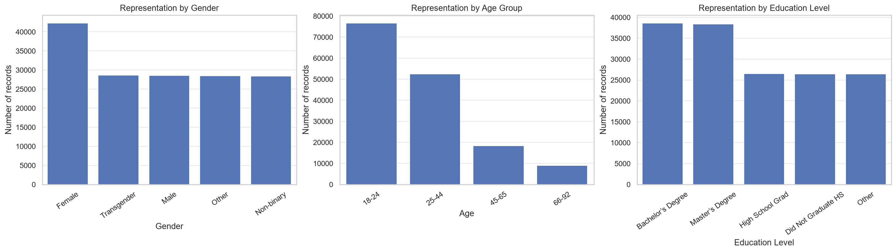
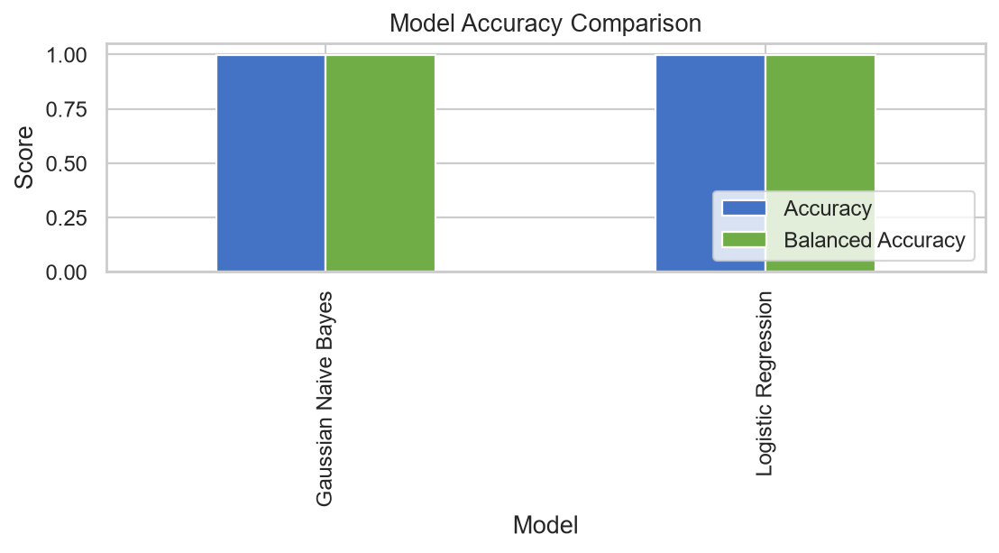
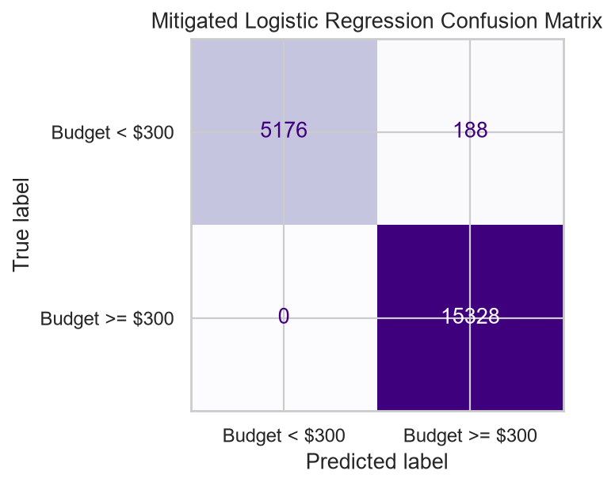
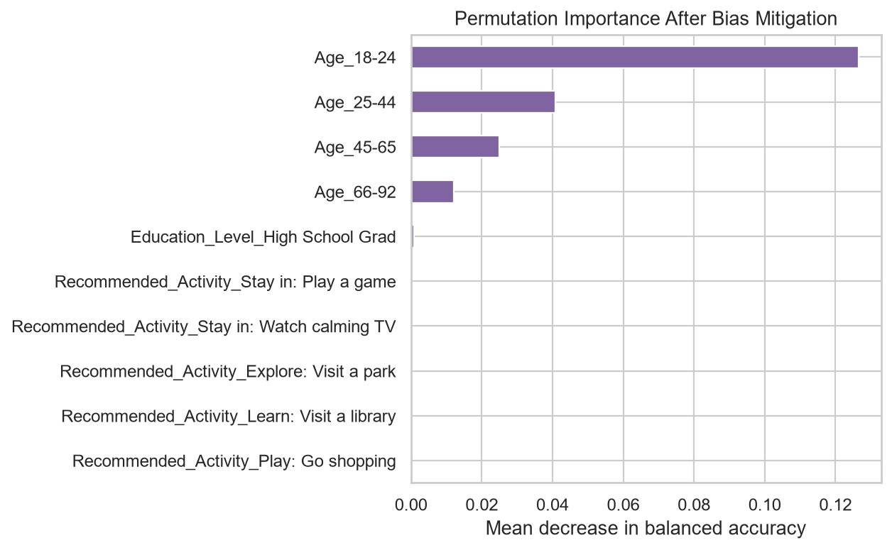
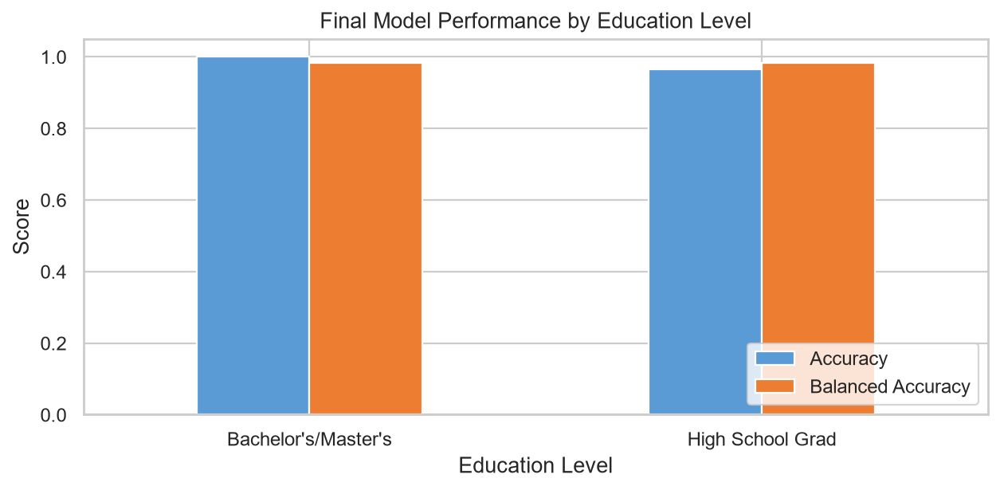

Model Card - IDOOU AI Budget Predictor
Model Details
-- IDOOU Budget Predictor is a binary classification model that estimates whether a user's activity budget is at least $300.
-- The selected baseline model is Logistic Regression trained on one-hot encoded age, gender, education, children, and recommended-activity variables.
-- The use case is a personalized activity recommendation assistant, not a financial eligibility or credit decision system.
-- The baseline model is evaluated together with a reweighted, bias-mitigated version before any deployment decision.
Intended Use
-- The model may suggest activities whose expected budget is compatible with a user's stated preferences and trip context.
-- Users should be shown the predicted budget category, the uncertainty or limitations of the estimate, and an opportunity to edit or reject the recommendation.
-- Users should be asked to confirm the budget rather than having the model silently make a spending decision.
-- The app should minimize collection of sensitive information, explain why features are used, and provide a human-in-the-loop correction path.
-- The model is not intended for lending, insurance, employment, pricing, or any decision that restricts access to services.
Factors
-- The target is a binary budget category: less than $300 or at least $300.
-- Numeric age is converted to age bands, and categorical variables are one-hot encoded after missing records are removed.
-- Predictors include age band, gender, education level, whether the user has children, and recommended activity.
-- Education level is a sensitive proxy for socioeconomic privilege and is explicitly evaluated in the fairness analysis.
Metrics
-- Accuracy and balanced accuracy are reported for both baseline models and the final mitigated model.
-- Confusion matrices report false positives, false negatives, true positives, and true negatives.
-- AIF360 metrics include average odds difference, statistical parity difference, equal opportunity difference, Theil index, and disparate impact.
-- Interpretability is assessed with permutation importance using balanced accuracy as the scoring function.
Training Data
-- The source dataset contains 300,000 synthetic user-experience records; after removing missing records and excluding unrelated education groups, 103,459 records remain for modeling.
-- The final dataset is split into 51,729 training records, 31,038 validation records, and 20,692 test records.
Evaluation Data
-- The held-out test set contains 20,692 records and is not used to fit either baseline model or the reweighing transformation.
-- The validation set selects the probability threshold, while the test set is reserved for reported performance and fairness results.
Quantitative Analysis
-- Before mitigation, Logistic Regression achieved 0.997 accuracy and 0.998 balanced accuracy. Its average odds difference was -0.518, statistical parity difference was -0.993, equal opportunity difference was -1.000, and Theil index was 0.002.
-- After AIF360 Reweighing, accuracy was 0.991 and balanced accuracy was 0.982. Average odds difference changed to -0.000, statistical parity difference changed to -0.949, equal opportunity difference changed to 0.000, and Theil index changed to 0.003.
-- Reweighing substantially improved average odds difference and equal opportunity difference toward their ideal value of zero while preserving high balanced accuracy. Statistical parity difference remained negative, so the mitigation reduces but does not eliminate the structural disparity.
-- The results support using the mitigated model only as an assistive recommendation with user confirmation, monitoring, and periodic subgroup evaluation rather than as an autonomous decision-maker.
Visualizations





Ethical Considerations
-- IDOOU should keep a human in the loop by showing users the predicted budget category, allowing them to edit the input data, and asking them to confirm or reject the recommendation before an activity is selected.
-- The complete-case dataset is not inclusive because it excludes users with missing information and excludes people outside the two education groups studied. The budget label is also strongly associated with education level, which can encode socioeconomic privilege and reproduce existing inequality.
-- The baseline models have very high accuracy but fail the fairness analysis: they generate far fewer favorable predictions for high-school graduates, and their errors are not distributed evenly across groups.
-- AIF360 Reweighing was applied as a pre-processing mitigation strategy. It improved average odds difference and equal opportunity difference toward zero, although statistical parity remained imperfect and therefore requires continued monitoring.
-- Potential harms include discouraging users from affordable activities, stereotyping users by education level, hiding uncertainty, and creating unequal access to recommendations. Permutation importance identified education indicators as dominant before mitigation; after reweighing, their influence was reduced relative to the baseline, but they remain important and should not be interpreted as causal evidence.
Caveats and Recommendations
-- The dataset may lack inclusiveness because it is synthetic, contains missing values, over-represents some age bands, and represents only selected education groups after filtering.
-- The model is predisposed to false positives and false negatives for different groups because the outcome is highly imbalanced and the education signal is unusually strong.
-- Before deployment, I would conduct intersectional testing across education, gender, age, and missingness patterns; run sensitivity analyses with alternative labels and thresholds; obtain stakeholder feedback; and establish drift, calibration, and subgroup-monitoring procedures.
Business Consequences
-- Positive impact: The IDOOU Budget Predictor could reduce planning effort, help users discover activities within their stated budget, and support a more convenient personalized experience for hotels and autonomous-vehicle dashboards.
-- Negative impact: If users see systematically less favorable recommendations or perceive the model as stereotyping them by education, they may lose trust in the application. Poor recommendations could reduce engagement, revenue, partner adoption, and brand reputation, while an undisclosed fairness problem could create regulatory and ethical risk.